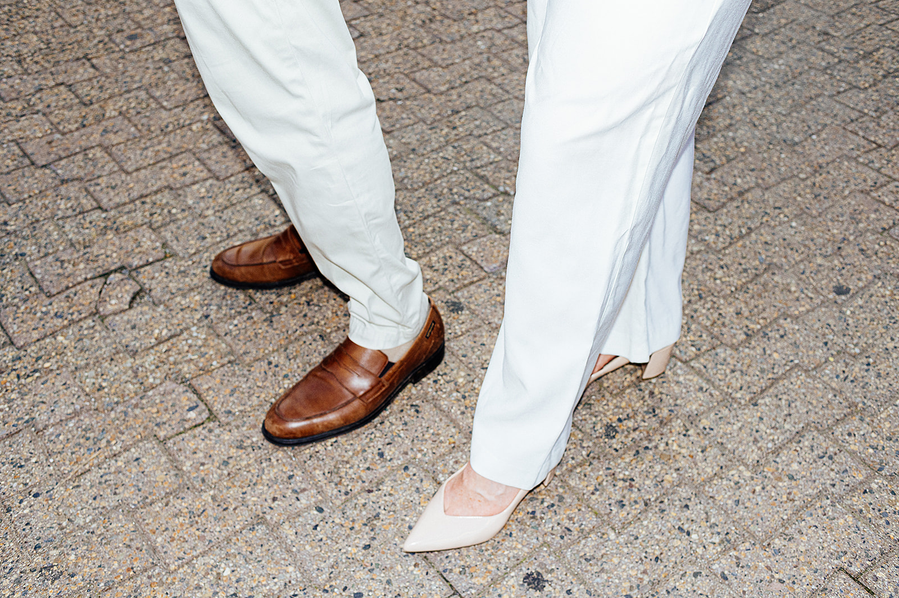

What Is Editorial Wedding Photography?
Editorial wedding photography isn't about posed perfection—it's about capturing authentic moments with the polish and artistry of a magazine spread. Here's what sets it apart.
Read More →.jpg)
Why Authentic Moments Beat Posed Perfection
Ditch the choreographed moments and staged portraits. The best wedding photos happen when you're too busy enjoying your day to remember the camera exists.
Read More →
Documentary-Style Wedding Photography
Great wedding photography captures real emotion and genuine connection. Here's why documentary-style photography creates timeless, authentic wedding images.
Read More →